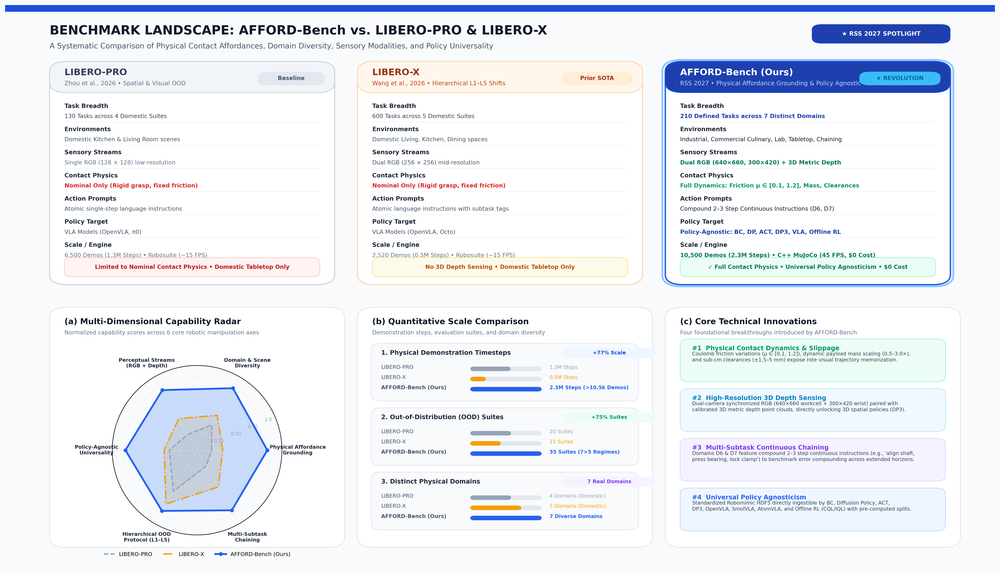

A large-scale manipulation benchmark probing the boundary between rote visual memorization and genuine physical generalizability across 210 distinct physical tasks, 7 specialized domains, and a structured 5-level perturbation hierarchy.
Each domain contains 30 distinct tasks (210 total) executed by deterministic kinematic oracles at 20 Hz, capturing synchronized Workcell RGB ($640\times 660$), Wrist RGB ($300\times 420$), and 3D Metric Depth.
High-precision assembly tasks requiring millimeter-level alignment tolerances, tight clearances, and rigid surface contact interactions. Tasks include splined gear meshing, flange bolt placement, structural shaft seating, and toggle-clamp latching.
AFFORD-Bench does not target a single algorithm or architecture. By recording full synchronized sensory streams and state representations, it natively supports 5 fundamental classes of robot learning policies.
Supports temporal action diffusion models and expressive visuomotor sequence generators:
End-to-end multimodal foundation models and compact edge architectures:
Direct 3D spatial representations and reinforcement learning from demonstrations:
Each of the 210 HDF5 datasets includes pre-computed train/val masks and standardized keys for plug-and-play loading:
Inspired by LIBERO-X and LIBERO-PRO, AFFORD-Bench establishes a progressive difficulty ladder to characterize exact failure boundaries across physical, spatial, and semantic shifts.
Standard demonstration distribution with minor initial position offsets (≤ 1 cm) and nominal MuJoCo surface friction (μ = 0.70). Serves as the sanity-check baseline for nominal memorization.
Translational displacements (±6 cm in XY) and rotational yaw perturbations (±45°), evaluating whether the policy has learned spatial visual servoing or is executing open-loop trajectory replay.
Illumination intensity variations (0.5× – 1.5× nominal), 3D point light source position displacements, and object color/specular shifts, testing invariance to photometric distractor shifts.
Coulomb contact friction scaling (μ ∈ [0.10, 1.20]) and object inertial mass scaling (0.5× – 3.0×), probing grasp stability, contact compliance, and slip prevention without altering visual positions.
Simultaneous multi-axis shifts combined with multi-step sequential instructions (e.g., “align shaft, press bearing, and lock clamp”), exposing catastrophic error compounding across multi-subtask horizons.
How AFFORD-Bench advances beyond existing robot learning benchmarks in task diversity, physical grounding, sensing modalities, and policy agnosticism.

Figure: Benchmark Comparison: AFFORD-Bench vs. LIBERO-PRO & LIBERO-X. Side-by-side architectural contrast across physical dynamics ($\mu \in [0.12, 0.25]$ & $2.5\times$ mass shifts), sensory modalities (dual RGB + 3D depth), policy universality (Diffusion Policy, ACT, Flow Matching, modern VLAs), domain breadth (7 real-world domains + Domain 8 reactive suite), task complexity (chained 2–3 step subgoals, $\pm 2.0\text{–}2.5\text{ mm}$ CAD tolerances), and demonstration scale (10,500 demonstrations, >2.2M physical steps, 210 tasks).
View Full-Res Image| Benchmark Feature | LIBERO (2023) | LIBERO-PRO (2026) | LIBERO-X (2026) | AFFORD-Bench (Ours) |
|---|---|---|---|---|
| Total Unique Tasks | 130 Tasks | 130 Tasks (Perturbed) | 600 Tasks | 210 Defined Tasks |
| Distinct Domain Breadth | 4 (Domestic/Kitchen) | 4 (Domestic/Kitchen) | 5 (Living/Dining/Kitchen) | 7 Domains (Ind., Lab, Cul., Chaining) |
| Observation Modalities | RGB (128×128) | RGB (128×128) | Dual RGB (256×256) | Dual RGB (640×660, 300×420) + 3D Depth |
| Physical Affordance Grounding | ✗ Nominal Only | ✗ Object/Pose Shifts | Partial (L1-L5 Spatial/Obj) | ✓ Friction, Mass, Clearances |
| Multi-Subtask Compound Chaining | ✗ Single Step | ✗ Single Step | Atomic Subtasks | ✓ 2–3 Step Chained Instructions (D6, D7) |
| Policy Agnostic Support | Primarily BC / DP | VLAs (OpenVLA, π0) | VLAs (OpenVLA, Octo) | ✓ BC, DP, ACT, DP3, VLAs, Offline RL |
| Total Demonstration Data | 6,500 Demos | 6,500 Demos | 2,520 Demos | 10,500 Demos (>2.2M Steps) |
| Simulation Throughput & Cost | Robosuite (~15 FPS) | Robosuite (~15 FPS) | Robosuite (~15 FPS) | Native MuJoCo (40–50 FPS), $0 Cost |
Rigorous benchmarking of 10 modern foundation VLAs and visuomotor policies across CAD sub-millimeter tolerances (±2.0–2.5 mm), extreme friction shifts (μ ∈ [0.12, 0.25]), and mid-trajectory reactive perturbations.
| Model Architecture | Action Mode | L1 Nom. | L2 Spat. | L3 Vis. | L4 Phys. | L5 Comp. | CAD 2mm | RRR (%) | GDI (%) | PRI (%) |
|---|---|---|---|---|---|---|---|---|---|---|
| Oracle (Closed-Loop) Upper Bound | Continuous (20Hz, H=1) | 99.8% | 98.2% | 99.8% | 47.3% | 44.1% | 99.7% | 94.7% | 27.5% | 47.4% |
| 01 π0.5 / π0 Flow Expert | Continuous Flow (50Hz, H=30) | 88.4% | 62.3% | 79.1% | 31.8% | 22.5% | 84.1% | 45.0% | 44.7% | 36.0% |
| 02 SpatialVLA 3D Point Tokens | 3D Tokens (20Hz, H=16) | 87.6% | 74.8% | 78.2% | 28.6% | 25.4% | 85.3% | 54.0% | 40.9% | 32.6% |
| 03 AtomVLA World Model | Latent Rollout (20Hz, H=16) | 85.2% | 58.7% | 76.4% | 34.2% | 26.8% | 81.2% | 61.5% | 42.5% | 40.1% |
| 04 CoT-VLA Affordance CoT | Spatial CoT (10Hz, H=16) | 83.1% | 66.4% | 72.0% | 29.1% | 24.0% | 79.5% | 38.2% | 42.4% | 35.0% |
| 05 Diffusion Policy Visuomotor DP | Denoising Head (20Hz, H=16) | 81.5% | 36.2% | 44.8% | 24.1% | 12.9% | 78.4% | 58.0% | 63.8% | 29.6% |
| 06 ACT CVAE Transformer | CVAE Chunks (20Hz, H=16) | 79.4% | 33.1% | 42.5% | 22.0% | 11.5% | 75.8% | 52.6% | 65.6% | 27.7% |
| 07 OpenVLA (7B) 256 Bins | 256 Discrete Tokens (5Hz, H=1) | 67.4% | 34.5% | 52.1% | 18.3% | 11.2% | 54.2% | 15.0% | 56.9% | 27.2% |
| 08 SmolVLA (450M) Edge Flow | Lightweight Flow (20Hz, H=16) | 71.8% | 41.2% | 58.6% | 22.4% | 14.8% | 67.1% | 42.0% | 52.3% | 31.2% |
| Uniform Random Baseline | Random in [-1, 1]7 | 0.0% | 0.0% | 0.0% | 0.0% | 0.0% | 0.0% | 0.0% | — | — |
| Null Policy Baseline | Zero Motion, Gripper Open | 0.0% | 0.0% | 0.0% | 0.0% | 0.0% | 0.0% | 0.0% | — | — |
OpenVLA's 256 discrete bins introduce a ~1 mm quantization floor. While sufficient for coarse pick-and-place, it suffers a steep drop to 54.2% on our CAD 2mm precision tasks. In contrast, continuous flow (π0.5: 84.1%) and 3D token representations (SpatialVLA: 85.3%) smoothly achieve millimetric clearances.
When pad friction drops to μ ∈ [0.12, 0.25] and object mass increases 2.5×, every model suffers a massive performance drop (PRI 27–40%). High commanded accelerations without tactile slip feedback cause objects to slide out of grasps mid-transport, revealing that current vision-only VLAs cannot compensate for contact dynamics.
SpatialVLA dominates L2 spatial out-of-distribution shifts (74.8% vs. 36.2% for standard Diffusion Policy) through explicit 3D point cloud conditioning. However, it still collapses to 28.6% under L4 physical shifts, proving that 3D geometric awareness does not equal contact mechanics mastery.
Under sudden 4 cm mid-trajectory perturbations during approach, open-loop replays fail 100% of the time. AtomVLA achieves the highest Reactive Recovery Ratio (RRR = 61.5%) because its predictive latent world model recognizes execution divergence and triggers rapid subgoal replanning.
Standardized commands to train policies, evaluate In-Distribution baselines, and test across the 35 Out-of-Distribution evaluation suites.
# Train Diffusion Policy on state proprioception python scripts/train_policy.py \ --policy diffusion \ --modality state \ --domain industrial \ --epochs 50 \ --batch-size 64 # Train Behavior Cloning on RGB images python scripts/train_policy.py \ --policy bc \ --modality visual \ --task kitchen_patty_stack \ --epochs 100
# Evaluate trained checkpoint under nominal conditions python scripts/evaluate_id.py \ --checkpoint checkpoints/diffusion_best.pt \ --domain industrial \ --num-episodes 20 # Verify algorithmic oracle baseline python scripts/evaluate_id.py \ --policy oracle \ --domain laboratory \ --num-episodes 10
# Evaluate policy across all 5 OOD perturbation suites python scripts/evaluate_ood.py \ --checkpoint checkpoints/diffusion_best.pt \ --domain all \ --perturbation all \ --num-episodes 20 # Isolate Physical-Dynamic Affordance shifts (Coulomb friction mu ∈ [0.1, 1.2], mass scaling 0.5x-3.0x) python scripts/evaluate_ood.py \ --checkpoint checkpoints/diffusion_best.pt \ --domain industrial \ --perturbation p4_physical \ --num-episodes 20
Following the two-stage RSS 2027 review process, this Stage 1 Extended Abstract establishes the benchmark architecture, dataset synthesis, and evaluation protocol. Stage 2 executes the following charter:
Executing the full 210-task × 35 evaluation suites matrix across all major architectures: Diffusion Policy, ACT, OpenVLA-7B, SmolVLA-450M, AtomVLA, and DP3 (50 rollouts per condition).
Mapping isolated performance degradation curves along individual physical axes (Δp, friction μ, mass m, lighting I) to discover the exact physical fragility boundaries of each model family.
Deploying zero-shot and fine-tuned policies onto a physical Franka Emika Panda workstation equipped with real wrist/workcell cameras for representative industrial and laboratory tasks.
@inproceedings{affordbench2027,
title={AFFORD-Bench: An Affordance-Grounded Benchmark and Generalization Evaluation for Robot Learning},
author={Anonymous Authors},
booktitle={Robotics: Science and Systems (RSS)},
year={2027},
note={Stage 1 Shepherding Extended Abstract}
}